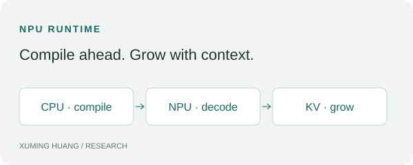

WUKLAB · UC SAN DIEGO · JAN. 2026–PRESENT
Edge AI Systems Optimization
Compile the program as context grows, and use memory when it is needed.
Undergraduate research with Prof. Yiying Zhang.

Progressive NPU compilation
Problem. Static-shape NPU programs tie compilation and KV-cache capacity to a chosen context size. Preparing the full capacity before inference adds startup work and reserves memory before the context needs it.
Idea. I developed a JIT runtime that overlaps progressive graph compilation on the CPU with inference on the NPU. Copy-and-grow KV caching carries model state forward as larger programs become available.
Result. The runtime reduced foreground compilation time by 91.98% and average KV memory by 33.05%, while preserving model quality and decoding. These metrics describe foreground compilation and average KV allocation, respectively.
Removing repeated compiler work
Problem. Repeatedly sorting dependency and consumer vectors adds CPU work during NPU compilation.
Idea. Cache the sorted vectors and invalidate them when dependencies change.
Result. Reduced CPU sorting time by 94.2% and contributed PR #348 to the Intel NPU Compiler repository (open draft). The percentage refers to sorting time, not total compilation time.
Understanding device affinity
I developed a CPU/GPU/NPU benchmarking methodology to characterize operator and inference-stage affinity. The measurements identify hardware-dependent placement preferences to guide heterogeneous scheduling.
Placement needs to account for execution stage, shape, and device boundaries. A local operator win alone does not establish an end-to-end scheduling improvement.
Related technical notes
Earlier JIT prototype and experimental history · iGPU rendering interference